透過率を設定した散布図
サマリー
このチュートリアルでは、シンボルの色に透過率を設定した散布図の作図方法、カテゴリ凡例とバブルスケールを学習します。 このグラフはXYデータから作図され、座標データ以外の２つのデータ列を参照してシンボルサイズとシンボルカラーをマッピングしたものです。カテゴリ凡例はタイプを色により分かりやすく把握することに使用でき、バブルスケールはシンボルの大きさによりサイズを把握できます。データポイントの重なり部分を見やすくするために透過率の設定をしています。
- 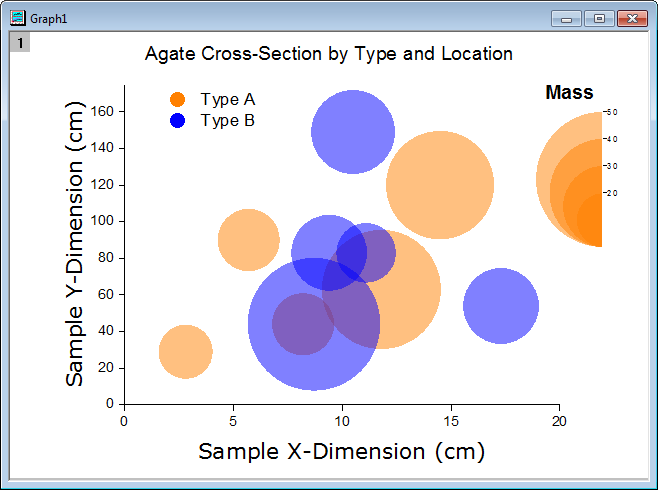
必要なOriginのバージョン: Origin 2015 SR0以降
学習する項目
このチュートリアルでは、以下の項目について解説します:
- ワークブック列の値を使用してシンボルのサイズと色をコントロールする
- カテゴリー値から凡例を追加する
- バブルスケールを追加して編集する
- 散布図の透過率を設定する
- グラフに枠を追加する
ステップ
このチュートリアルは、チュートリアルデータプロジェクト（<Origin EXE フォルダ>\Samples\TutorialData.opj）と関連しています。
また、「ラーニングセンター」からこのグラフを呼び出すことができます。(ヘルプ：ラーニングセンター メニューを選択、または キーボードのF11
キーを押して、グラフサンプル：線+シンボルグラフを選択します)
- Tutorial Data.opjを開き、プロジェクト・エクスプローラ (PE)でubble
with Transparency フォルダを開きます。
- ワークブックBook2Gをアクティブにし、ワークシートのA～C列を選択し、メインメニューの作図：基本の2Dグラフ：バブルプロットを選択します。
- メニューからフォーマット：作図の詳細(プロット属性)を選択し、作図の詳細ダイアログボックスを開きます。シンボルタブを開き、以下のように設定します：
- プレビューボックスの右にある矢印ボタンをクリックして塗りつぶしのされた円のシンボルを選択
- シンボルの色ドロップダウンリストからインデックス：Col("Type")を選択
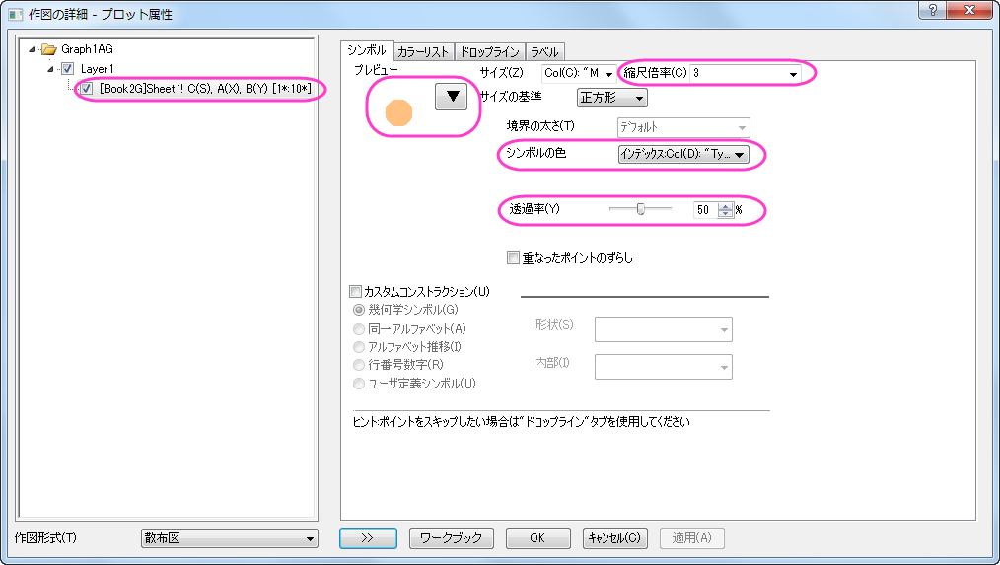
- OKボタンをクリックして設定を適用し、ダイアログを閉じます。グラフは次のようになります。
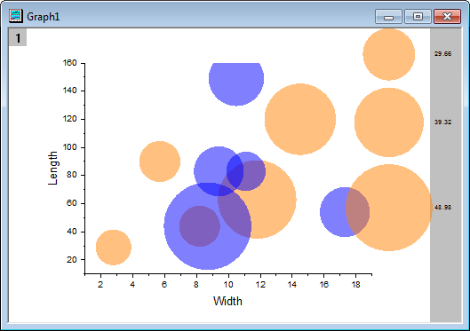
- 軸のスケールとタイトルを更新するには、フォーマット：軸スケール：X軸と操作してダイアログを開きます。以下のように設定します。
- スケールタブでX軸(水平)が選択されていることを確認し、下図のように設定します。
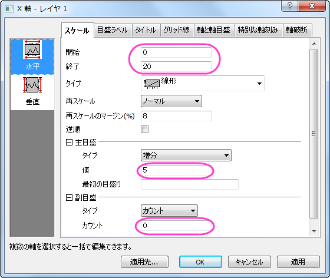
- スケールタブを開いたまま、垂直アイコンを選択してY軸に以下のように軸のスケールを設定します。
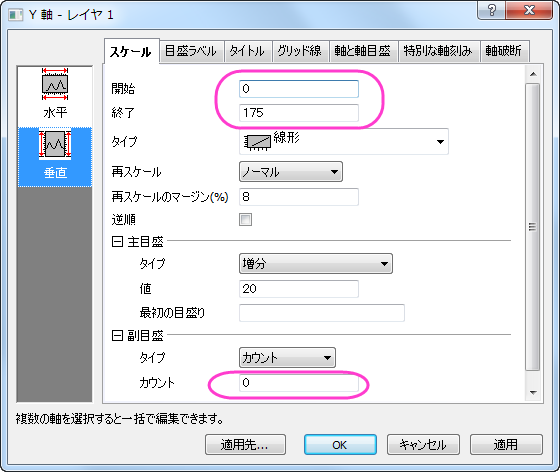
- タイトルタブを開きます。アイコンは左を選択している状態で、テキスト部分に「Sample Y-Dimension
(cm)」と入力し、フォントとサイズを以下の図のように設定します。
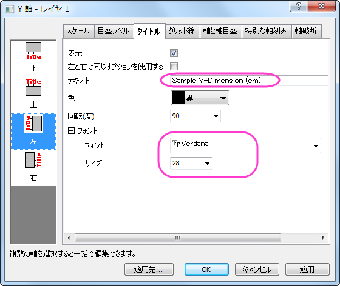
- 左側パネルで下アイコンをクリックし、X軸のタイトルを「Sample X-Dimension (cm)
」に変更してフォントとサイズを以下のように設定します。
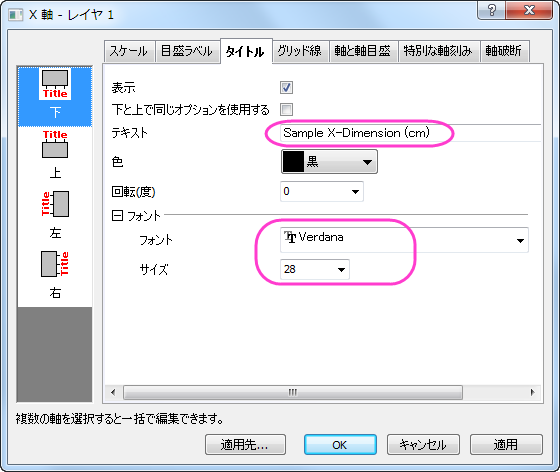
- バブルスケールをダブルクリックし、バブルスケール制御ダイアログを開きます。レイアウトのドロップダウンから、入れ子を選択します。半円にチェックをつけ、引出線を表示のチェックボックスを付けて下図のように設定がなっていることを確認して適用します。
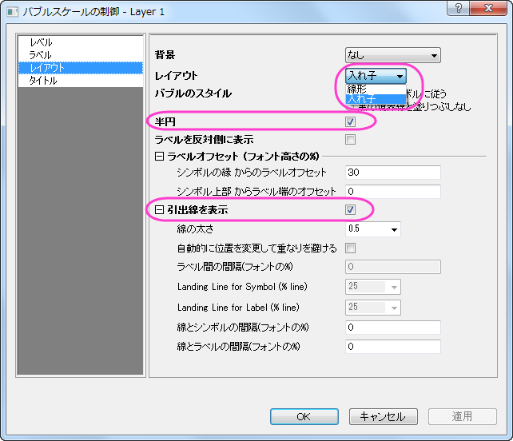
- レベルページを開きます。開始を20、終了を50に設定し、増分の値を10に設定します。下図のように設定が出来ているはずです。
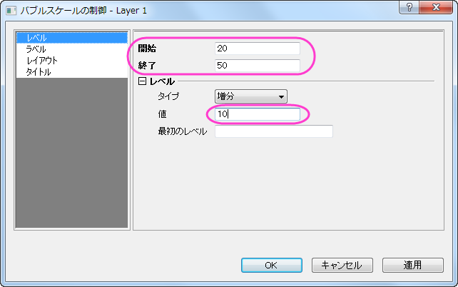
- タイトルページを開きます。表示にチェックをつけ、タイトルのテキストを「Mass」に設定します。フォントのサイズを28にして、太字のチェックを付けます。OKをクリックしてダイアログを閉じる前は、以下のようになります。
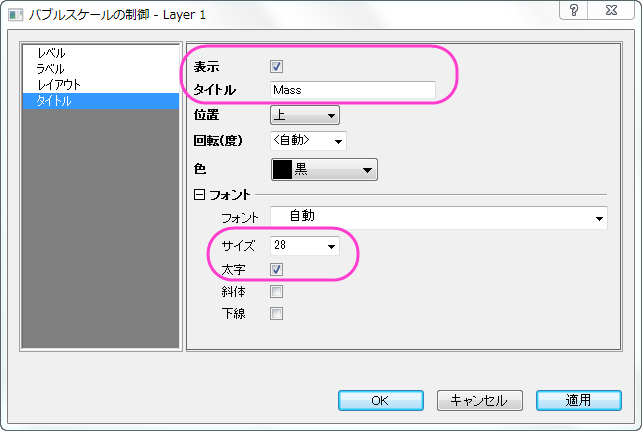
- グラフは以下のようになります。

- メニューからグラフ操作：凡例：カテゴリー値と操作してGraph Manipulation:legendcatダイアログを表示します。サイズ以外のチェックボックスにチェックがついていることを確認してOKをクリックします。表示された判定をグラフの左上に移動しましょう。
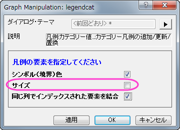
- 凡例を右クリックし、コンテキストメニューからオブジェクトの表示属性を選択します。凡例の内容を以下の図のように編集しましょう。
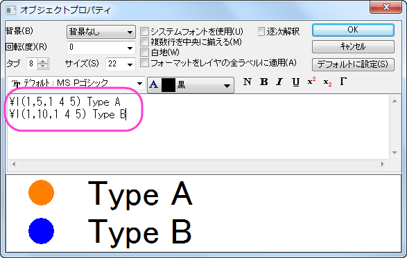
- OK をクリックして、ダイアログを閉じます。
- プロット操作・オブジェクト作成ツールバーにあるテキストツール
 ボタンをクリックし、グラフ枠の左上でクリックします。以下のテキストを入力します：Agate
Cross-Section by Type and Locationフォントを編集します。必要に応じてテキストボックスを移動します。
ボタンをクリックし、グラフ枠の左上でクリックします。以下のテキストを入力します：Agate
Cross-Section by Type and Locationフォントを編集します。必要に応じてテキストボックスを移動します。
最終的なグラフはこのようになります。